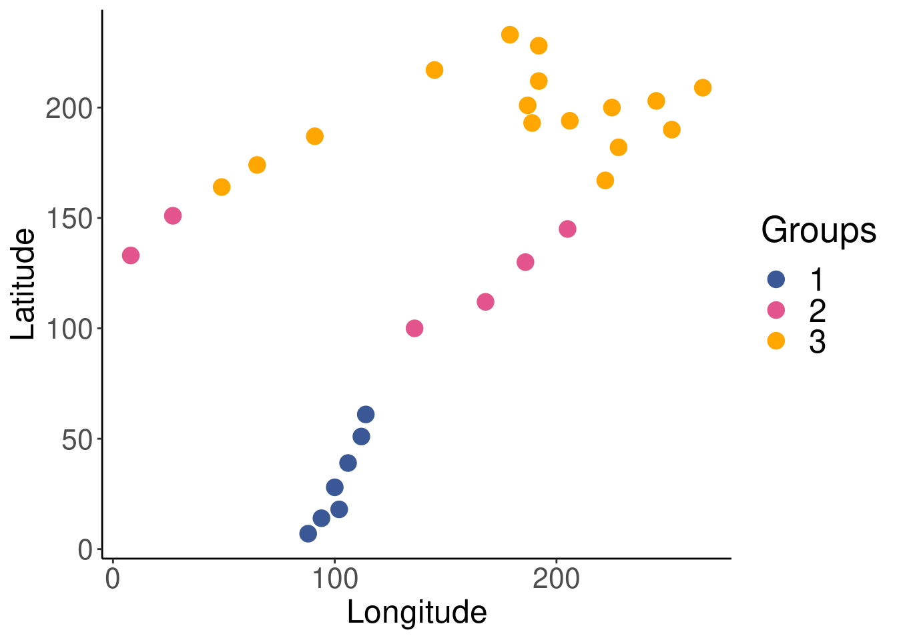
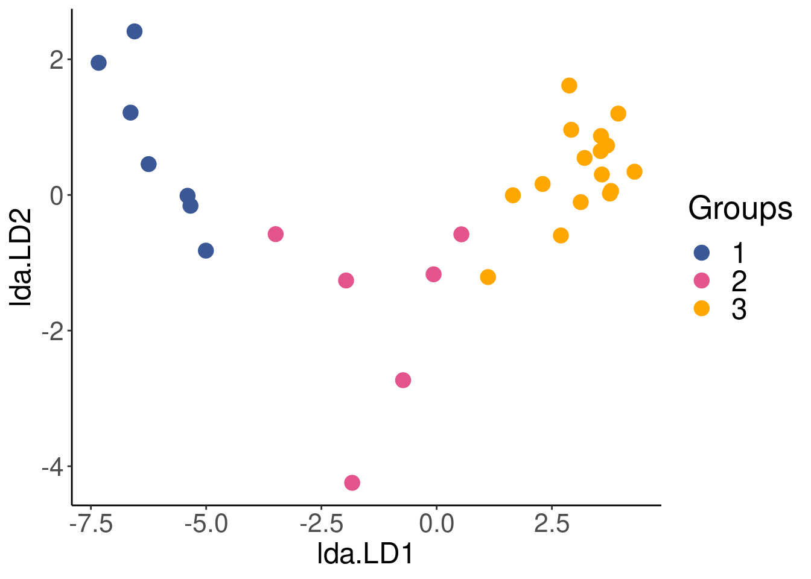

Chapter 10 Linear discriminant analysis
Linear discriminant analysis (LDA) is a constrained (canonical) technique that divides a response mtrix into groups according to a factor by finding combination of the variables that give best possible separation between groups. The grouping is done by maximizing the among-group dispersion versus the within-group dispersion. This allows you to determine how well your independent set of variables explains an a priori grouping, which may have been obtained from a previous clustering analysis (see Workshop 9) or from a hypothesis (e.g. grouping is based on sites at different latitudes or different treatments).
An LDA computes discriminant functions from standardized descriptors. These coefficients quantify the relative contributions of the (standardized) explanatory variables to the discrimination of objects. Identification functions can be computed from the original (not standardized) descriptors to classify new data into pre-determined groups. There are several useful applications of this capacity to predict groupings, such as assessing which population a fish should be classified in based on morphology or classifying whether a new paper is a freshwater, marine or terrestrial study based on the abstract of papers in those pre-determined biomes.
10.1 LDA in R: Doubs River fish dataset
We will continue to work with the Doubs River fish dataset to demonstrate how to implement a linear discriminant analysis in R.
10.1.1 Making a priori groupings
First, we want to make an a priori classification that is independent from the environmental data set. We know that environmental variables generally change with latitude. This might lead us to ask the following question: If we classify our Doubs River sites according to latitude, how well do environmental variables explain these groupings? To answer this question, we can make a priori groups by simply dividing the range of latitudes equally into three groups, and assigning each site to a group depending on where they fall along the divided range.
Let us begin by loading spatial coordinates for the Doubs River sites.
# load spatial data for Doubs sites
spa <- read.csv("data/doubsspa.csv", row.names = 1)
spa$site <- 1:nrow(spa) # add site numbers
spa <- spa[-8, ] # remove site 8We can then assign sites into three groups based on their latitude.
# group sites based on latitude
spa$group <- NA # create 'group' column
spa$group[which(spa$y < 82)] <- 1
spa$group[which(spa$y > 82 & spa$y < 156)] <- 2
spa$group[which(spa$y > 156)] <- 3Let us quickly plot the latitude groupings to see if they make sense.
ggplot(data = spa) +
geom_point(aes(x = x,
y = y,
col = as.factor(group)),
size = 4) +
labs(color = "Groups",
x = "Longitude",
y = "Latitude") +
scale_color_manual(values = c("#3b5896", "#e3548c", "#ffa600")) +
theme_classic() + # formatting the plot to make it pretty
theme(axis.title = element_text(size = 18),
axis.text = element_text(size = 16),
legend.title = element_text(size = 20),
legend.text = element_text(size = 18))
Now that we have our a priori groups, we would usually need to ensure the data meets a condition necessary for the application of LDA: the within-group covariance matrices of the explanatory variables must be homogeneous. To do this, we would use the betadisper() function in the vegan package to check the multivariate homogeneity of within-group variances before proceeding, as seen in Borcard, Gillet, and Legendre (2011). For the purposes of this workshop, we will move straight to doing the LDA.
10.1.2 Running the LDA
Our sites have now been reorganised into groups that are as distinct as possible, based on the environmental variables. We can plot the reorganised sites to visualise the results of the LDA.
# Plot the newly reorganised sites according to the LDA
ggplot(lda.plotdf) +
geom_point(aes(x = lda.LD1,
y = lda.LD2,
col = factor(group)),
size = 4) +
labs(color = "Groups") +
scale_color_manual(values = c("#3b5896", "#e3548c", "#ffa600")) +
theme_classic() + # formatting the plot to make it pretty
theme(axis.title = element_text(size = 18),
axis.text = element_text(size = 16),
legend.title = element_text(size = 20),
legend.text = element_text(size = 18))
10.1.3 Evaluating grouping accuracy
Once we run the LDA, we can use the result object to determine:
- How sites are grouped based on the the environmental data, according to the LDA;
- The posterior probabilities of that the sites to belong to the groups;
- The percentage of correct classification based on our latitudinal grouping.
# Classification of the objects based on the LDA
spe.class <- predict(LDA)$class
# Posterior probabilities that the objects belong to those
# groups
spe.post <- predict(LDA)$posterior
# Table of prior vs. predicted classifications
(spe.table <- table(spa$group, spe.class))## spe.class
## 1 2 3
## 1 7 0 0
## 2 0 6 0
## 3 0 0 16## 1 2 3
## 1 1 1All sites were correctly classified (Proportion of corrected classification = 1) into the latitude groups based on environmental variables.
10.1.4 Predictions
We can now use this relationship to classify new sites into latitude groups, based on the relationship we have established between our latitudinal grouping and environmental factors using the LDA.
Let us predict the groupings of five new sites in the dummy dataset classifyme.csv using the LDA object we computed above. To do this, we will use the predict() function.
# Load the new site data
classify.me <- read.csv("data/classifyme.csv", header = TRUE)
# remove das
classify.me <- subset(classify.me, select = -das)
# Predict grouping of new sites
predict.group <- predict(LDA, newdata = classify.me)
# View site classification
predict.group$class## [1] 1 1 1 3 3
## Levels: 1 2 3Our new sites, in order, have been classified in groups 1, 1, 1, 3 and 3 respectively.
10.2 Challenge 5
Create four equally-spaced latitude groups in the mite.xy dataset. Then, run an LDA to classify mite sites into latitude groupings based on environmental variables (SubsDens and WatrCont). What proportion of sites was correctly classified in group1? in group2?
To begin, load the mite.xy data:
Recall some useful functions:
Step 1: Make four equally spaced latitude groups.
# assign numbers to sites
mite.xy$site <- 1:nrow(mite.xy)
# figure out the spacing to make 4 equally spaced latitude
# groups
(max(mite.xy[, 2]) - min(mite.xy[, 2]))/4## [1] 2.4# use this to group sites into 4 latitude groups
mite.xy$group <- NA # create 'group' column
mite.xy$group[which(mite.xy$y < 2.5)] <- 1
mite.xy$group[which(mite.xy$y >= 2.5 & mite.xy$y < 4.9)] <- 2
mite.xy$group[which(mite.xy$y >= 4.9 & mite.xy$y < 7.3)] <- 3
mite.xy$group[which(mite.xy$y >= 7.3)] <- 4Step 2: Run the LDA.
Step 3: Check whether the groupings are correct.
# group sites based on the LDA
mite.class <- predict(LDA.mite)$class
# get the table of prior versus predicted classifications
(mite.table <- table(mite.xy$group, mite.class))## mite.class
## 1 2 3 4
## 1 9 4 2 0
## 2 2 11 4 0
## 3 1 2 14 2
## 4 0 0 3 16We can answer the challenge question with this part:
## 1 2 3 4
## 0.6000000 0.6470588 0.7368421 0.8421053So, what proportion of sites was correctly classified in group1? in group2?
- 60% were correctly classified into group1, and 64.7% were classified into group2.
References
Borcard, Daniel, François Gillet, and Pierre Legendre. 2011. Numerical Ecology with R. Use R! New York: Springer-Verlag. https://doi.org/10.1007/978-1-4419-7976-6.